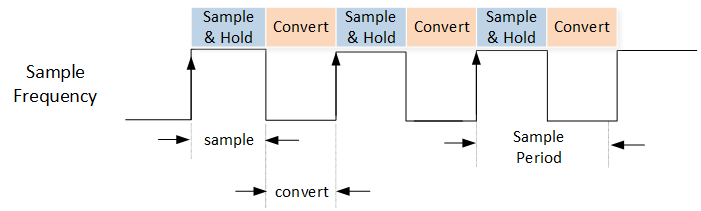
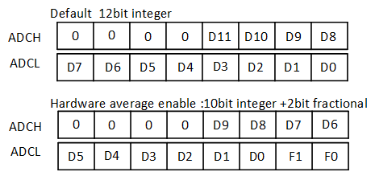
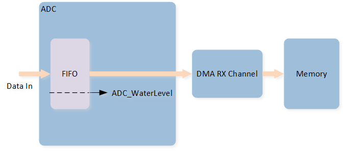

ADC
Sample List
This chapter introduces the details of the ADC sample. The RTL87x2G provides the following samples for the ADC peripheral.
Functional Overview
Analog mux ADC have maximum 8 input channels for general analog to digital conversion purpose. For all ADC channels, maximum input voltage must not exceed the VDDIO level.
Feature List
12-bits resolution.
Support 8 input external channels, and VBAT internal channel.
Support external single-ended mode.
Two external channel input modes: bypass mode and divide mode.
Two work modes: one shot mode and continuous mode.
16 index schedule table.
TIM7 triggers ADC one shot mode sampling.
32 depth FIFO.
Support hardware average function, number of hardware average sample: max 256. (Only schIndex[0] support)
GDMA supported (Continuous Mode).
Max sample rate: 1M.
Block Diagram
Here is the block diagram of ADC. By invoking the MCU firmware, the function of ADC sampling voltage values is implemented. The ADC peripheral obtains the configured sampling channel, and the hardware samples the voltage value of the corresponding channel.

System Block Diagram of ADC
External channels
RTL87x2G support 8 external channels: 0, 1, 2, 3, 4, 5, 6, and 7 correspond to pin P2_0, P2_1, P2_2, P2_3, P2_4, P2_5, P2_6 and P2_7. RTL87x2G support VBAT internal channel.
Channel Mode
Single-Ended Mode
Single-Ended mode occupies one channel and uses only one pin for sampling. Call API
EXT_SINGLE_ENDEDset the corresponding ADC channel to the schedule tableADC_InitTypeDef::ADC_SchIndex.Internal VBAT Mode
Internal VBAT mode is used to measure VBAT voltage. Call API
INTERNAL_VBAT_MODEset the VBAT channel to the schedule tableADC_InitTypeDef::ADC_SchIndex.
External Channel Input Mode
Bypass Mode
The input range of ADC bypass mode is 0 to 0.9V. Call API
ADC_BypassCmd()to set corresponding channel to bypass mode.Divide Mode
The input range of ADC divide mode is 0 to 3.3V. The default setting is divide mode.
Work Mode
One Shot Mode
After ADC is enabled, only one sampling is performed. To sample again, the user needs to manually restart sampling.
The data is by default stored in the schedule table. If set
ADC_InitTypeDef::ADC_DataWriteToFifotoENABLE, data can be optionally stored in FIFO in one shot mode.Fill in
ADC_ONE_SHOT_MODEwithin theADC_Cmd()API to enable ADC one shot mode sampling.It can cooperate with TIM7 peripheral to realize timing continuous sampling.
Continuous Mode
After ADC is enabled, sampling continues until ADC is disabled.
The data is by default stored in the ADC FIFO.
It can cooperate with GDMA continuous sampling.
Fill in
ADC_CONTINUOUS_MODEwithin theADC_Cmd()API to enable ADC continuous mode sampling.
Schedule Table Index
ADC has 16 schedule tables. Write the parameters in the table below into schIndex[0] ~ schIndex[15] to set channel mode and channel number.
Then set bitmap, schIndex[0] ~ schIndex[15] corresponding to bit 0 ~ bit 15 of bitmap. If the specific bit of bitmap is set to 1, it means that the schedule table corresponding to this bit is enabled. For example, if config schIndex[0] and schIndex[1], then bitmap is
0000 0000 0011(that is,0x0003). The Bitmap parameter is set throughADC_InitTypeDef::ADC_Bitmap.After ADC is enabled, ADC will sample successively according to the mode configured in the enabled schedule table.
|
Description |
|---|---|
|
Single-Ended mode, the input is external channel 0. |
|
Single-Ended mode, the input is external channel 1. |
|
Single-Ended mode, the input is external channel 2. |
|
Single-Ended mode, the input is external channel 3. |
|
Single-Ended mode, the input is external channel 4. |
|
Single-Ended mode, the input is external channel 5. |
|
Single-Ended mode, the input is external channel 6. |
|
Single-Ended mode, the input is external channel 7. |
|
Internal battery voltage detection channel. |
Note
The schedule index needs to be enabled in sequence, the order cannot be disrupted. For example, configuring only schIndex[0] and schIndex[2] is not allowed; must configure schIndex[0], schIndex[1], and then schIndex[2].
In one shot mode, it will be executed sequentially from schedule 0 to 15, and the schedule index of disable will not be executed.
In one shot mode, automatically stops after executing the last schedule. In continuous mode, automatically loop after executing the last schedule.
ADC Sample Clock
The timing of the ADC sampling is shown in the figure.

ADC Sample Period Clock
After starting the ADC sampling, the ADC sampling clock output begins. The high level indicates the ADC Sample time, while the low level indicates the ADC Convert time.
Each schedule's sampling period consists of the Sample time and Convert time. The time required for a single sampling is the sum of the sampling times of all configured schedules.
The ADC Sample time is determined by ADC_InitTypeDef::ADC_SampleTime, and the specific calculation formula is (ADC_InitTypeDef::ADC_SampleTime + 1) / 10MHz.
The ADC Convert time is determined by ADC_InitTypeDef::ADC_ConvertTime, with selectable times of 500ns, 700ns, 900ns, and 1100ns.
ADC Data Format
The data from the ADC consists of 12 bits. The data storage method for the ADC supports left alignment (MSB) and right alignment (LSB), which can be set through ADC_InitTypeDef::ADC_DataAlign.
The data storage format of the ADC is shown in the figure:

ADC Data Format
ADC supports a maximum of 256 in Hardware Average mode. In this mode, the data storage format changes to a 10-bit integer + 2-bit decimal. The Hardware Average function can be enabled via ADC_InitTypeDef::ADC_DataAvgEn, and the averaging coefficient can be set through ADC_InitTypeDef::ADC_DataAvgSel.
After enabling the Hardware Average function, the data storage format of the ADC is as shown in the figure:

ADC Data Format - Enable Hardware Average
ADC GDMA
When the ADC samples in Continuous Mode, the data is by default stored in the ADC FIFO. You can use GDMA to transfer the data from the ADC FIFO to Memory.
A GDMA burst transfer is triggered when the amount of data in the ADC FIFO is greater than or equal to the value set in the initialization ADC_InitTypeDef::ADC_WaterLevel.
During a single GDMA burst, GDMA_InitTypeDef::GDMA_SourceMsize pieces of data are retrieved from the ADC FIFO.
When configuring ADC GDMA transfers, it is recommended to set the value of ADC_InitTypeDef::ADC_WaterLevel to MSize.

ADC GDMA Diagram